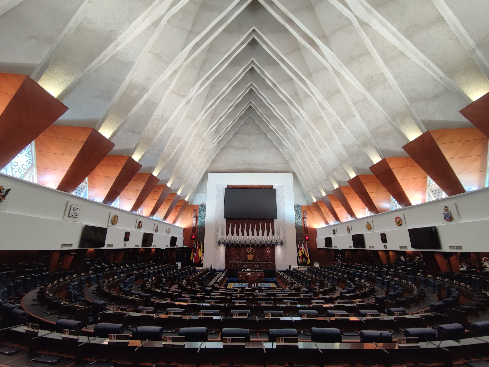

Executive Summary
말레이시아가 2026년 6월 AI 거버넌스 법안을 내각에 올립니다. 디지털부가 발표한 일정이고, 안와르 이브라힘 총리가 하원에서 법안의 핵심을 직접 짚었습니다. 윤리적 사용, 시민권, 그리고 지식재산권입니다. 그중 데이터를 다루는 사람에게 가장 묵직한 대목은 마지막 항목입니다. AI 학습에 들어간 입력 데이터와 AI가 만들어 낸 출력물 양쪽을 모두 지식재산으로 보호하겠다고 했기 때문입니다. 이 글은 그 이중 구조가 왜 다른 길인지를 봅니다.
서구의 대표 모델인 EU AI Act는 AI를 위험 등급으로 나누고 위험한 쓰임을 금지하거나 제한하는 데서 출발합니다. 말레이시아는 출발점을 바꿉니다. 무엇을 막을지를 묻기 전에, 이 데이터의 주인이 누구이고 그 값을 어떻게 보호할지를 먼저 묻습니다. 같은 'AI 규제'라는 이름을 달고 있어도, 한쪽은 행동을 통제하고 다른 한쪽은 소유를 정의합니다.
데이터를 다루는 쪽에 이 차이는 단순한 법률 용어 이상입니다. 규제를 '하지 마라'는 금지의 목록으로 읽어 온 관행에, 말레이시아는 '이건 네 자산이다'라는 다른 문장을 끼워 넣습니다. 학습 데이터의 출처와 권리 관계가 법적 지위를 얻는 순간, 그 데이터를 정리하고 추적해 두는 일이 비용이 아니라 자산 관리가 됩니다. 이 글은 그 전환이 데이터 실무에 무엇을 뜻하는지 짚습니다.

주요 수치
출처: The Edge Malaysia, New Straits Times, Marketing-Interactive
네 숫자가 이 법안이 선 자리를 한눈에 보여 줍니다. 법안은 2026년 6월 내각에 오르고, 보호 범위는 학습 데이터 입력과 AI 출력물이라는 두 축에 걸칩니다. 동시에 말레이시아는 자국 AI 인프라에 RM 20억(약 4.9억 달러)을 배정하고, 2030년까지 AI 주도국이 되겠다는 시한을 내걸었습니다. 규제와 투자가 같은 방향을 가리킨다는 점이 이 네 숫자 안에 들어 있습니다.
2026.6
내각 상정 예정
디지털부가 AI 거버넌스 법안을 내각에 올리는 시점
입력·출력
IP 보호 이중 구조
학습 데이터와 AI 생성물 양쪽을 지식재산으로
RM 20억
주권 AI 클라우드 예산
약 4.9억 달러, 2026년 예산에서 자국 AI 인프라에 배정
2030
AI 주도국 목표
말레이시아가 내건 국가 AI 전환 시한
입력과 출력을 모두 지식재산으로
법안의 중심에는 한 문장으로 줄일 수 있는 발상이 있습니다. AI를 만드는 데 들어간 데이터와 AI가 만들어 낸 결과물을 모두 누군가의 재산으로 본다는 것입니다. 안와르 이브라힘 총리는 2026년 2월 24일 하원 질의에서 이 구조를 직접 언급했습니다. 한쪽은 입력, 곧 모델 학습에 쓰인 텍스트·이미지·오디오·비디오 같은 저작물입니다. 다른 한쪽은 출력, 곧 AI 시스템이 생성한 콘텐츠입니다. 법안은 이 두 가지를 따로 떼어 놓지 않고 한 묶음의 지식재산 문제로 다룹니다.
입력 쪽 질문은 익숙합니다. 모델이 학습한 저작물의 권리를 누가 갖는가, 그 사용은 정당한가. 생성형 AI를 둘러싼 저작권 분쟁이 전 세계에서 다투는 바로 그 지점입니다. 출력 쪽 질문은 상대적으로 새롭습니다. AI가 만들어 낸 글과 그림과 음악의 저작권은 누구에게 귀속되는가. 말레이시아 법안은 이 둘을 동시에 사정권에 넣고, 집행은 말레이시아 지식재산공사(MyIPO)가 맡도록 설계되고 있습니다. 기존 저작권법(Copyright Act 1987)을 기본 근거로 두고, 신법이 AI라는 맥락에서 이를 보완하는 구조입니다.
물론 법안이 IP 한 가지만 다루는 것은 아닙니다. AI 위험 분류 프레임워크, 개발부터 배포·모니터링에 이르는 전 생애주기 감독, 의무적 사고 보고 같은 장치도 함께 들어갑니다. 데이터센터까지 포함해 AI 생태계 전반을 덮겠다는 그림입니다. 그럼에도 이 법안을 다른 규제와 구별짓는 표지는 IP 이중 구조입니다. 위험을 관리하는 조항은 다른 나라에도 있지만, 입력과 출력을 모두 재산권의 언어로 정의하려는 시도는 흔치 않습니다.
핵심: 이 법안은 학습 데이터를 '모델을 만드는 재료'에서 '권리가 붙은 자산'으로 옮겨 놓습니다. 입력과 출력을 한 묶음으로 묶었다는 점에서, 규제의 질문이 '이 AI가 안전한가'에서 '이 데이터와 결과물은 누구의 것인가'로 한 칸 이동합니다.
동남아 규제 지형에서 말레이시아의 자리
'동남아 최초'라는 수식은 조심해서 써야 합니다. 구속력 있는 AI 법을 가장 먼저 통과시킨 나라는 베트남입니다. 2025년 12월에 법을 확정하고 2026년 3월부터 단계적으로 시행하며, 지식재산법과 사이버보안법 개정까지 함께 묶었습니다. 싱가포르는 다른 길을 갑니다. 법으로 강제하는 대신 AI Verify 같은 자발적 프레임워크로 신뢰를 쌓고, 2026년 1월에는 에이전틱 AI 거버넌스 프레임워크를 세계에서 가장 먼저 내놨습니다.

그래서 말레이시아의 '최초'는 베트남보다 좁고 정확하게 말해야 합니다. AI 거버넌스를 위한 전용 입법에서, 학습 데이터 입력과 AI 출력물 양쪽의 IP 보호를 중심 프레임으로 내건 첫 사례라는 뜻입니다. 베트남도 IP 개정을 포함했지만 그것을 법의 간판으로 삼지는 않았습니다. 말레이시아는 IP를 곁가지가 아니라 기둥으로 세웁니다. 같은 동남아 안에서도 강조점이 다른 셈입니다.
이 강조점은 말레이시아의 다른 행보와 한 방향으로 묶입니다. 쿠알라룸푸르는 ASEAN AI 안전 네트워크 사무국을 유치했고, 2026년 예산에서 주권 AI 클라우드 인프라에 RM 20억을 배정했으며, 국내 라이선스 데이터로 학습한 자국 AI 모델 ILMU를 주권 인프라 안에서 운영합니다. 비 AI 목적의 데이터센터 신규 허가까지 멈추고 AI 전용으로 방향을 틀었습니다. 데이터의 소유와 통제를 국가 차원에서 끌어안으려는 흐름 위에, IP 중심의 법안이 얹히는 구조입니다.
EU AI Act와 나란히 놓으면 대비가 선명해집니다. EU는 위험 기반으로 고위험 용도를 금지하거나 제한하고, 2026년 8월부터 집행에 들어갑니다. 무게중심이 '무엇을 못 하게 할 것인가'에 있습니다. 말레이시아는 '이 데이터와 결과물은 누구의 것인가'를 먼저 묻습니다. 안와르 총리 본인도 자국의 접근이 서구와 다르다고 말합니다. 법적 세부보다 도덕적 고려를 함께 다룬다는 설명인데, 데이터의 언어로 옮기면 통제보다 소유를 앞세운다는 뜻에 가깝습니다.
정확히 말하면: 동남아 최초의 구속력 있는 AI 법은 베트남입니다. 말레이시아의 자리는 다릅니다. AI 거버넌스 전용 법안에서 입력·출력 IP 보호를 중심에 세운 첫 시도라는 점에서, '무엇을 금지할까'가 아니라 '무엇을 자산으로 볼까'를 출발점으로 삼습니다.
규제가 데이터의 값을 만든다
법안이 통과되면 데이터를 다루는 실무의 무게가 어디로 옮겨갈까요. 가장 직접적인 변화는 학습 데이터의 출처 관리가 선택이 아니라 의무가 된다는 점입니다. 학습 데이터가 지식재산의 사정권에 들어오면, 그 데이터를 어디서 가져왔고 어떤 권리 관계에 있는지가 컴플라이언스의 기본 항목이 됩니다. 저작권 침해 소지가 있는 데이터로 학습한 모델은 그 자체로 법적 위험을 안게 됩니다. 데이터의 품질이 더 이상 모델 성능만의 문제가 아니라 법적 리스크의 문제로 연결됩니다.
출력 쪽에도 변화가 따라옵니다. AI 생성물의 저작권 귀속이 명시되면, 누가 그 결과물의 권리를 갖는지를 계약과 워크플로 안에서 미리 정해 두어야 합니다. 동시에 데이터를 제공하는 쪽의 위치가 달라집니다. 학습에 쓰인 데이터에 권리가 분명히 붙으면, 그 데이터를 가진 사람의 협상력이 올라갑니다. 데이터가 거래의 대상이 될 때 값이 매겨지고, 값이 매겨지려면 소유가 분명해야 합니다. 법안이 하려는 일이 바로 그 소유를 분명히 하는 것입니다.

여기서 '규제=금지'라는 익숙한 등식이 흔들립니다. 규제를 부담의 목록으로만 읽으면 이 법안은 또 하나의 제약처럼 보입니다. 그러나 소유권을 확립하는 규제는 자산을 만드는 규제이기도 합니다. 토지에 등기가 생기면서 땅이 거래 가능한 자산이 된 것과 구조가 닮았습니다. 데이터의 주인이 법으로 정해질수록, 정리되지 않은 데이터 더미는 정리된 데이터 자산으로 바뀔 여지를 얻습니다. 말레이시아의 선택은 규제를 데이터 가치 창출의 도구로 쓰겠다는 쪽에 가깝습니다.
물론 법안은 아직 초안 단계이고, 내각과 의회를 거치며 조항은 바뀔 수 있습니다. 입력과 출력을 모두 IP로 보호한다는 원칙이 실제 집행에서 어떻게 작동할지도 지켜봐야 합니다. 그럼에도 방향은 분명합니다. AI를 둘러싼 규제의 질문이 '안전한가'를 넘어 '누구의 것인가'로 넓어지고 있고, 데이터를 다루는 쪽은 어느 쪽 질문에도 답할 수 있게 출처와 권리를 정리해 두어야 합니다. 규제가 금지를 요구하든 소유의 증명을 요구하든, 준비물은 같습니다. 잘 정돈되고 추적 가능한 데이터입니다.
마무리: 말레이시아 법안은 규제를 금지가 아니라 자산화의 언어로 다시 씁니다. 학습 데이터에 권리가 붙는 순간, 데이터를 정리하고 추적하는 일은 컴플라이언스 비용이 아니라 자산 관리가 됩니다. 데이터를 다루는 쪽이 지금 준비할 것은, 우리가 무엇으로 AI를 만들었는지를 언제든 증명할 수 있는 기록입니다.